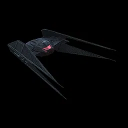
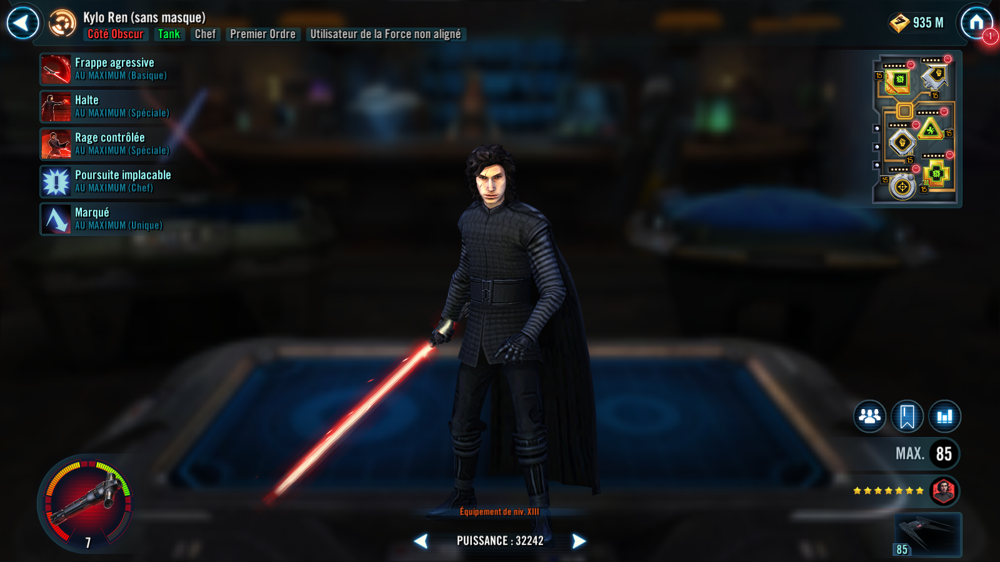

Kylo Ren (Unmasked)
Tough First Order Tank with a powerful Stun

Ship: TIE Silencer

Basic Attack: Aggressive Strike
Deal Physical damage to target enemy and inflict Tenacity Down for 2 turns. If the target was already debuffed, and it is Kylo's turn, he gains Taunt for 1 turn.
Special Attack : Halt (cooldown: 3)
Dispel all buffs on target enemy and Stun them for 2 turns. Kylo recovers 10% Health and gains Taunt for 1 turn. This attack can't be Evaded or Resisted.
Special Attack : Focused Rage (cooldown: 3)
Deal Physical damage to target enemy and recover Health equal to the damage dealt. If the target is Stunned, deal double damage.
Leader Ability: Merciless Pursuit

First Order allies have +40% Critical Damage and +30 Speed. When a First Order ally scores a Critical Hit, they gain 20% Turn Meter. When a First Order ally gains a status effect, they recover 5% Health and 5% Protection.
Unique Ability : Scarred

When Kylo takes damage, he recovers 8% Health and a random First Order ally who doesn't have it gains Advantage for 2 turns. Kylo has +50% Counter Chance, doubled while he has Taunt. Kylo takes reduced damage from Percent Health damage effects and gains Taunt for 1 turn at the start of each encounter.